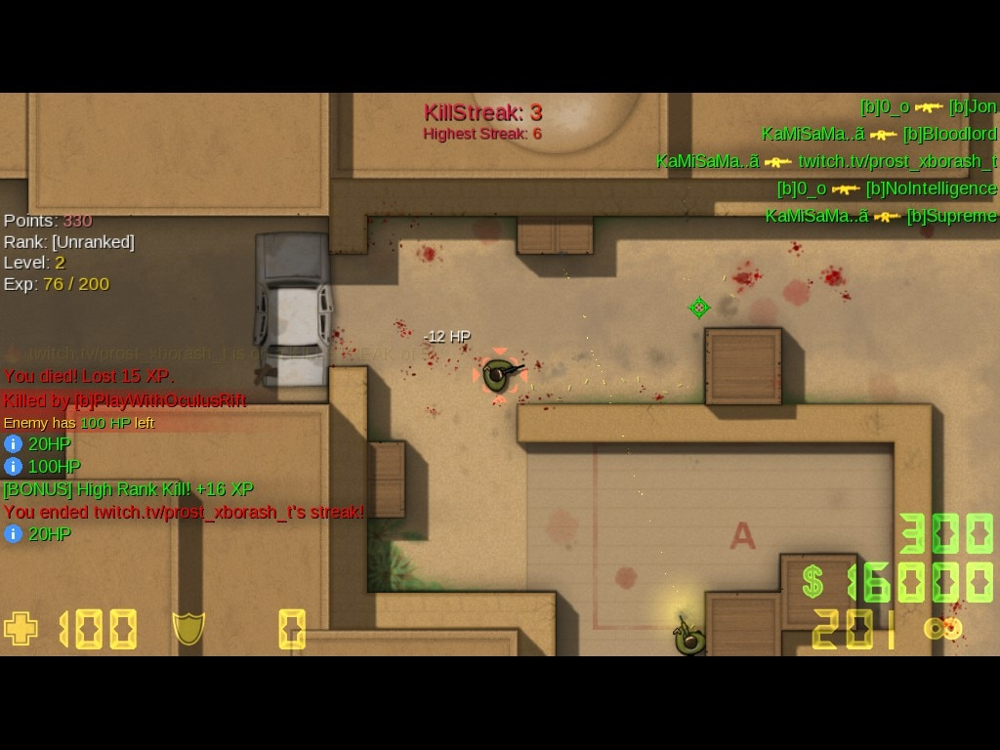
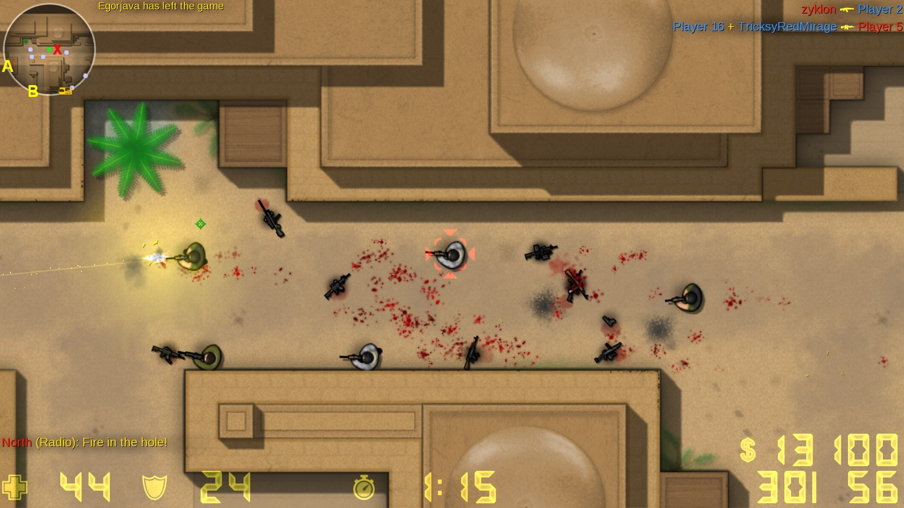
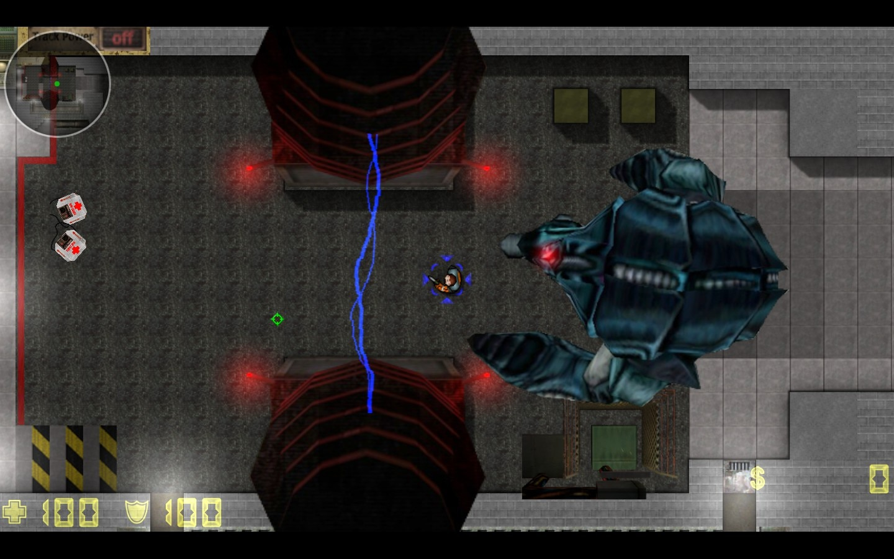
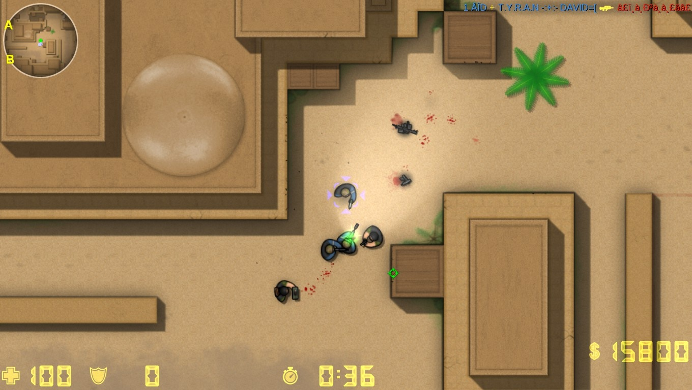
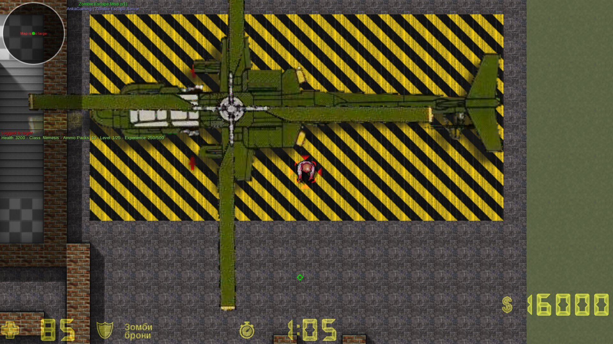
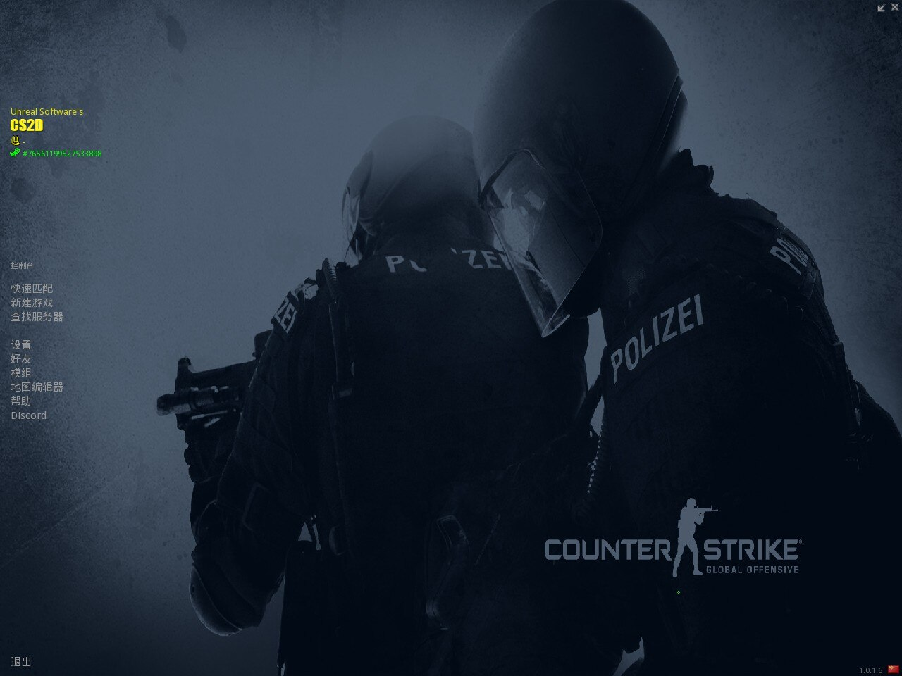
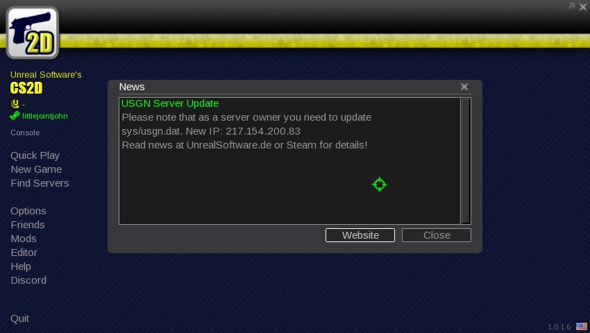
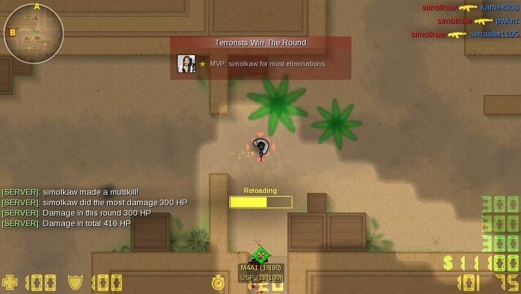

Release date: March 21, 2004
Genre: Top-down shooter
Developer: Unreal Software
Publisher: Unreal Software
Platform: PC (Windows, Linux, macOS)
Edition: Licensed (Free-to-Play)
Interface language: Russian, English, Chinese and others
Voice language: English
Operating system: Windows 10 / 11, Windows 7, Windows XP
Processor: 1 GHz
RAM: 256 MB
Graphics card: 64 MB, DirectX 9+ or OpenGL support
DirectX: Version 9.0c
Free disk space: 50 MB
Sound card: DirectX compatible
Game description
CS2D is a team-based top-down tactical shooter where counter-terrorists and terrorists fight rounds on pixel-art maps. Teams complete objectives such as planting a bomb, holding hostages, preventing an explosion, or rescuing hostages. Players earn money, buy weapons and armor, and use smoke grenades and Molotov cocktails for tactical map control. CS2D is known for its low system requirements, mod support, and no gameplay-affecting donations.
Game trailer:
Game screenshots:







